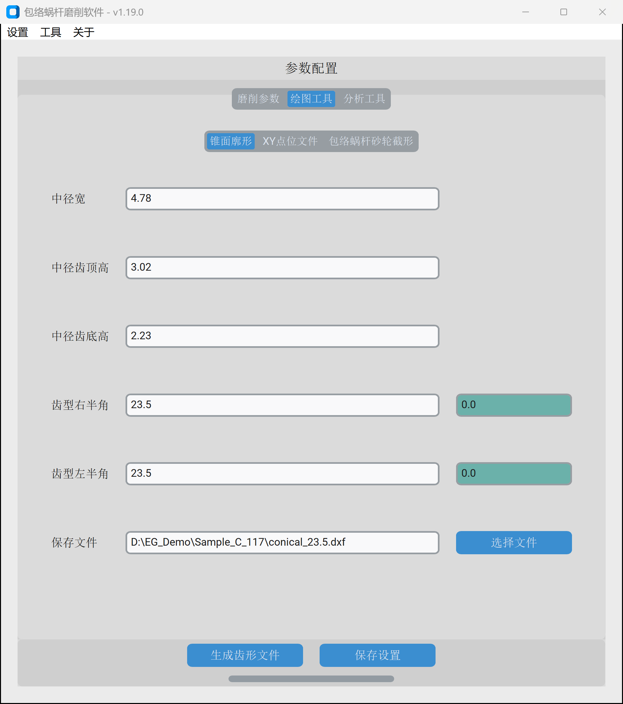
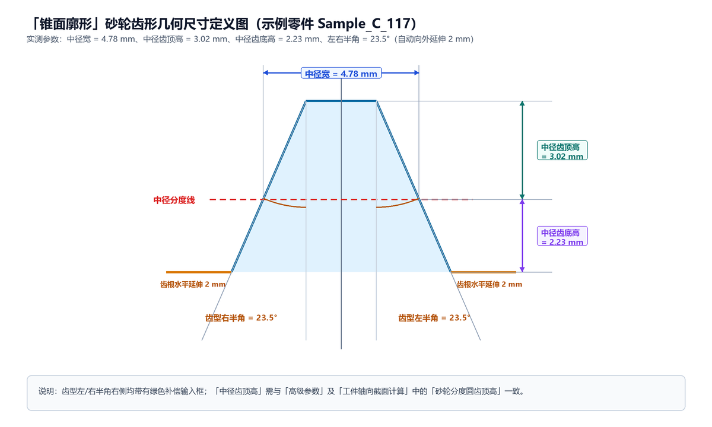
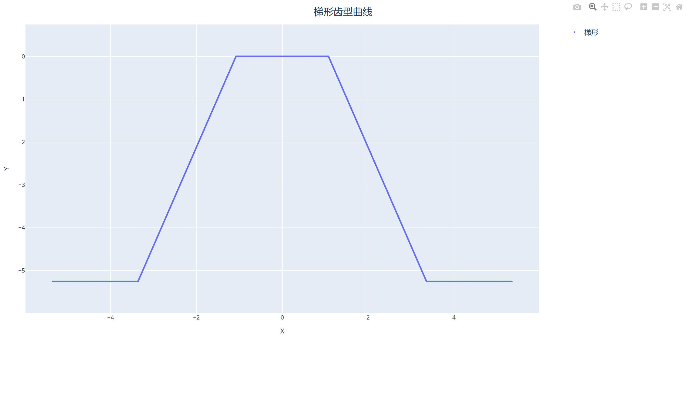

3.1 锥面廓形
锥面廓形 用于快速生成直边对称或不对称梯形砂轮齿廓，输出 1:1 的 CAD .dxf 文件（供砂轮修整及 工件轴向截面计算 直接调用）与交互式 2D 预览 .html。

一、几何尺寸定义示意图
下图以真实示例零件 Sample_C_117 参数（中径宽 = 4.78、中径齿顶高 = 3.02、中径齿底高 = 2.23、左右半角 = 23.5°）标出各参数位置：

二、参数逐项说明
| 参数名称 | 示例值 (Sample_C_117) |
物理含义与设置要点 |
|---|---|---|
中径宽 |
4.78 mm |
砂轮齿廓在中径分度线位置（距齿顶 向下 中径齿顶高 处）的理论宽度。 |
中径齿顶高 |
3.02 mm |
中径分度线到齿顶平面（）的垂直高度。此值需与 磨削参数 → 高级参数 及 工件轴向截面计算 中的 砂轮分度圆齿顶高 保持严格一致。 |
中径齿底高 |
2.23 mm |
中径分度线到齿根底面的垂直高度（总齿高 ）。 |
齿型右半角 |
23.5 ° |
左侧（x1->x2）斜边与垂直中心线之间的半角；右侧绿色框为角度补偿微调值。 |
齿型左半角 |
23.5 ° |
右侧（x3->x4）斜边与垂直中心线之间的半角；支持与右半角分别独立微调形成非对称齿形。 |
保存文件 |
D:\EG_Demo\Sample_C_117\conical_23.5.dxf |
点击 选择文件 指定 .dxf 输出路径与文件名。 |
三、生成结果展示
点击 生成齿形文件 后，软件不仅生成主梯形轮廓，还会在齿根两侧自动向外水平延伸 2 mm，同时在同目录生成同名 .html 交互预览图：

真实算例输出坐标（
Sample_C_117）：齿顶两侧交点坐标为 ，齿根角点坐标为 ，外加两侧2 mm齿根水平延伸线。